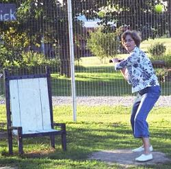

|
2006 Game Summaries and Box Scores Opening Day - May 6 . May 23 . June 3 . . June 17 . July 1 . July 4 . . July 29 . August 12 . August 26
Pitching Dominates on Opening Day. . . . . . . . . .Click Here for Pictures May 6th - A cool, breezy Opening Day 2006 led to four dominant pitching performances in a pair of low scoring games on Saturday. While the hitters scuffled in the first action of the year, the pitchers were in mid-season form all afternoon. A pair of rookies made their debuts as Donnie Hackney and Tad Goldman made the trip over from Vincennes to get their first taste of chair baseball.
Veteran Robert Trimble faced off against Goldman in the first game of the day as both cruised through the first 3 innings without allowing a run. In the bottom of the fourth, however, Goldman was his own worst enemy, but not on the mound. After allowing a hit to Evan Woodard, Nate Owens dropped a fly ball and then Goldman misfired on a short throw - loading the bases with nobody out. After retring the next batter, Trimble and Woodard both bounced grounders in front of the plate that Goldman was unable to throw out allowing two runs to score. With two outs, Hackney lined a pitch into left field for an RBI single making the lead 3-0. Four errors led to all three runs being unearned in the innning.
The visitors tried to battle back in the top of the 5th as Patrick Cork tripled to lead off the inning and later drove himself in on a single cutting the lead to 3-1. However, Trimble was dominant on the mound all afternoon striking a career high 15 batters. The visitors threatened again in the 8th bringing the tying run to the plate with one out, but were unable to score again. Trimble picked up the first win of the year allowing just one run on 10 hits and striking out 15. Goldman was outstanding as well allowing just 8 hits and striking out four, but committed four errors that led to three unearned runs and suffered the loss. Cork finished 6-for-12 to lead all batters while Trimble was 4-for-12 with a run.
Stats for 5/6/06 (Game #1) (Tad Goldman, Patrick Cork, Nate Owens)
vs. (Evan Woodard, Robert Trimble, Donnie Hackney) Hitting Pitching Defense Game 2 - The conditions were unchanging for the second game of the doubleheader and the pitching dominated once again. Cork faced off against Hackney in the second game and both were nearly unhittable. Both breezed through three innings with no trouble and Cork didn't allow a hit until the top of the 4th when Evan Woodard lined a single into right field. The hit seemed insignificant at the time, however it turned out to be the only hit allowed on the day as Cork went on to retire the final 18 batters to hurl a one-hit shutout. Hackney was just as dominant as he struck out 14 batters on the day and allowed just 4 hits through the first 8 innings. With the score still tied at 0-0 in the bottom of the ninth, Patrick ripped a single into center to start the inning and then doubled to right center with two outs to put runners on 2nd and 3rd with two down. With the game on the line, Nate Owens lined the 1-2 pitch just past the pitcher's mound and Hackney's throw to the plate narrowly missed the chair for the game's lone run.
As mentioned, Cork allowed just one single on the game and struck out 11 batters to pick up the win. It was the second one-hitter of his career. Hackney punched out 14 batters and allowed just 7 hits and one run in 8 2/3 innings. Cork and Owens were the only hitters to record more than one hit with both finishing 3-for-11.
On the day, the pitchers dominated allowing two earned runs on just 26 total hits in 34 2/3 innings while striking out 44 batters. Cork finished the day 9-for-23 and Owens was 6-for-23 as they were the only hitters to record an average over .200. Goldman and Hackney were 2-for-24 and 2-for-21 respectively, but were both brilliant on the mound despite both of them suffering losses.
Stats for 5/6/06 (Game #2) (Evan Woodard, Robert Trimble, Donnie Hackney) vs. (Tad Goldman, Patrick Cork, Nate Owens) Hitting Pitching Defense Tony Cork Throws Gem in Season Debut. . . . . . . . . .Click Here for Pictures May 23rd - Tony Cork led his team to victory with a sharp season debut in a Tuesday afternoon affair at Corklestick Park. Cork faced off against Josh Massey on the mound, who made his first chair baseball appearance since the 2001 season. Massey didn't appear rusty from the long layoff as he cruised through the first 3 innings without allowing a run. He was given a one-run lead in the top of the 3rd inning thanks to a long homerun into the dog pen by Kevin Ryan. The homer was the first of Ryan's career. However, Massey was unable to hold the lead as he allowed a leadoff single to Tony Cork in the bottom of the 4th and then Patrick Cork pulled a homerun just inside the foul pole to left to take a 2-1 lead. That was all the offense Tony would need, as he held the visitors hitless from the third inning on as he retired the final 16 batters he faced before giving way to Patrick in the top of the 9th. Patrick struck out the side for his first save to seal the 2-1 win.
The pitchers were the story once again as Tony Cork allowed just one run on 3 hits while striking out 7 over 8 innings. Josh Massey allowed just two runs on 10 hits and struck out 5, but suffered the loss. Patrick led all hitters with a 5-for-11 performance including a homerun and a double. Kevin Ryan led the visitors going 2-for-10 with a solo homer of his own.
Stats for 5/23/06 (Game #1) (Josh Massey, Nate Owens, Kevin Ryan)
vs. (Tony Cork, Patrick Cork, Evan Woodard) Hitting Pitching Defense More Pitching Domination and Late Game Heroics. . . . . . . . . .Click Here for Pictures June 3rd - Nearly 7 years to the day from the last time they faced off, Jay Jared and Tony Cork battled on the mound again Saturday in what turned out to be a wild opener for the doubleheader. On June 8, 1999, Jared made his highly anticipated debut at Corklestick Park. A former teen phenom, Jared dominated from start to finish that day but came up short in a 2-1 game despite allowing just 3 hits. He was outdueled that day by Tony Cork. History repeated itself Saturday as the two faced off again, with a nearly identical outcome.
With a slight breeze blowing in from left, both pitchers cruised through three innings with no scoring threats, but Jared was staked a 1-0 lead in the fourth inning thanks to a solo homerun from Ross Massey down the line in left. Jared held the lead with ease through 8 innings allowing just 4 hits and striking out 7 heading into the top of the 9th. The lead vanished quickly as Josh Massey blasted Jared's first pitch of the 9th onto the garage for a game-tying homerun. Two batters later, Patrick Cork turned on an inside fastball and wrapped the ball just inside the foul pole down the line in left and suddenly the game was 2-1. Tony surrendered a single in the bottom of the 9th before giving way to Patrick who retired the final two batters for his second save of the year.
Once again, Tony Cork was able to escape with a win with a masterful outing allowing just 5 hits. Cork is 2-0 and has allowed just 8 hits in 16 1/3 innings this year and has a 1.10 ERA. Jared took the loss and is 0-2 in his career despite allowing just 11 hits in 18 innings. The game winning blast from Patrick Cork was the 250th homerun of his career. Massey's game-tying homer was his first since July 16, 2001.
Stats for 6/3/06 (Game #1) (Tony Cork, Patrick Cork, Josh Massey)
vs. (Jay Jared, Ross Massey, Ryan Tomlinson) Hitting Pitching Defense Game 2 - In game two, Josh Massey took the hill against Kevin Ryan, who was making the first pitching appearance of his career. Massey was given a 1-0 lead in the fourth on a solo shot from Patrick, as he cruised through the first 6 innings. His team had a chance to break the game wide open in the bottom of the 6th as they loaded the bases with one out. Patrick hit a line drive to deep centerfield that would have cleared the bases, but Tony Cork was positioned perfectly and hauled in the fly ball to end the threat. Kevin helped himself in the top of the 7th with a mammoth homerun over the dog pen in right to tie the score at 1-1, however he couldn't hold the lead in the bottom of the inning as Massey had a pair of RBI singles to push the lead to 3-1. Massey was able to retire the final 6 batters in order to pick up his first win since July 22, 2001.
Despite piling up 13 hits in the game, the winners were only able to put three runs on the board. Patrick Cork finished 5-for-15 while Massey and rookie David Ulrich were both 4-for-15. Tony Cork was 5-for-11, but his team fell short. Kyle Shimer, making his first appearance at Corklestick as well, was 1-for-11. Massey allowed just 7 hits and struck out 7 in the win. Kevin Ryan allowed 13 hits, but just 3 runs and suffered the loss.
Stats for 6/3/06 (Game #2) (Tony Cork, Kyle Shimer, Kevin Ryan) vs. (Josh Massey, Patrick Cork, David Ulrich) Hitting Pitching Defense Bats Finally Heat Up; Tony Cork Still Undefeated June 17th - With a total of 15 runs scored in the first five games of the year, the offense was bound to come around eventually and it did on Saturday. For one team that is. While his teammates backed him with a 15-hit attack, Tony Cork continued to dazzle on the mound firing a 6-hitter on Saturday to move to 3-0 on the season.
It appeared runs would be tough to come by again as a steady breeze blew in from right field, but Tony gave himself a run in the top of the 3rd with an RBI double to left. Nathan Bryan, making his chair baseball debut, then belted a 2-run homer in the top of the 5th to make it 3-0. Cork's only hiccup of the day came in the bottom of the 5th when he allowed a triple to Patrick which was followed by a sharp single to right from Holly Cork for her first career RBI - and the only run of the day Tony allowed. Nate Owens added a 2-run triple and Tony cranked his first homerun since the 2003 season in the 8th inning for the final runs in the 8-1 victory. In his past 16 games, Tony had just one RBI, but he finished with 3 on the afternoon.
Once again, Cork was brilliant on the mound in the win. He is now 3-0 on the season with a sparkling 1.07 ERA and has allowed just 14 hits in 25 1/3 innings. David Ulrich took the loss allowing 8 runs on 15 hits, but did strike out 9 batters. A balanced offensive attack led to the easy win as each of the visitors collected 5 hits in 13 at bats. Tony had two doubles, a homerun and 3 RBI, Nathan Bryan had a triple, a homerun and 3 RBI and Nate Owens added a triple and 2 RBI. Holly Cork was the lone bright spot in defeat collecting her first career RBI while going 2-for-11.
Stats for 6/17/06 (Tony Cork, Nathan Bryan, Nate Owens)
vs. (David Ulrich, Patrick Cork, Holly Cork) Hitting Pitching Defense Big Runs Put up on Windy Afternoon. . . . . . . . . .Click Here for Pictures July 1st - The return of some long-time veterans resulted in plenty of runs on Saturday as a trio of all-time greats returned to Corklestick Park. Josh Williamson, Greg Howard and Dustin Waldrop all made their 2006 debuts and they all returned with a bang. Howard started off the day with a solo homerun to left off of Williamson for an early 1-0 lead, but Waldrop returned the favor with a 2-run shot of his own off of Howard in the bottom of the inning for a 2-1 lead. Patrick Cork homered in the 2nd and the 4th and Howard added another in the 3rd, but Waldrop hit another 2-run bomb in the fourth to re-tie the game at 4-4. Another Howard solo homer in the fifth was followed by an RBI triple from Williamson as the game continued to go back and forth. However, the home team busted the game open in the 7th thanks to 4 unearned runs capped off by a 3 run triple off the bat of Williamson who was able to hold the visitors in check over the final few innings for a 12-7 victory.
Howard put up some career numbers in the loss with a 6-for-13 effort including 4 homeruns. Patrick Cork added 3 homers, but all 7 runs scored were on solo homeruns. Williamson had a career day as well with a 10-for-14 performance and a chair baseball record 5 triples. If not for the "Joshua Tree" in right, Williamson could have had 4-5 homeruns, but he settled for one bomb and 6 RBI. Waldrop homered twice and drove in 5 as well.
Williamson survived 7 solo homeruns to pick up the win while Howard suffered the loss allowing 12 runs (7 earned).
Stats for 7/1/06 (Game #1) (Greg Howard, Patrick Cork, Jake Hoalt)
vs. (Tony Cork, Josh Williamson, Dustin Waldrop) Hitting Pitching Defense Game 2 - The second game was much less dramatic as the pitching was able to hold down the bats for most of the afternoon before some late inning fireworks put the game out of reach. Robert Trimble faced off against Tony Cork and Trimble was staked to a 1-0 lead thanks to an RBI single from David Ulrich in the 2nd. The game remained 1-0 into the fifth until Patrick Cork broke it open with a grand slam into the dog's pen in right field to push the lead to 5-0. A Trimble solo homer in the 7th preceeded a late explosion from Cork and Trimble that pushed the final to 11-0.
Trimble was dominant on the mound allowing just 4 hits and striking out 3 in the shutout win. He also had a career-high 9 hits in 15 at bats including 3 homeruns and 4 RBI. Patrick Cork was 7-for-15 with 3 homers and 6 RBI and David Ulrich was 6-for-15 with an RBI. Tony Cork suffered his first loss of the year allowing 11 runs in 8 2/3 innings.
On the day, there was plenty of offense in the doubleheader including Williamson's 11-for-23 effort with 5 triples. Patrick Cork was 12-for-27 with 6 homeruns and 9 RBI and Greg Howard was 7-for-24 with 4 homeruns and 4 RBI.
Stats for 7/1/06 (Game #2) (Robert Trimble, Patrick Cork, David Ulrich) vs. (Tony Cork, Greg Howard, Josh Williamson) Hitting Pitching Defense Rainy Holiday Doubleheader Provides Plenty of Action on the 4th of July. . . . . . . . . .Click Here for Pictures July 4th - The holiday crowd at Corklestick was treated to a pair of great games on Tuesday. The much anticipated return of Paul Alf highlighted the day as he made his third trip to the Stick, and his first since August 21 of 2004. Alf, who threw 11 shutout innings in his first and only appearance on the mound, faced off against the combination of Donnie Hackney and Isaac Salters in the first game of the day. A throwing error from Alf in the top of the 1st with the bases loaded led to the first run of the game, but Alf was helped out by Patrick Cork in the second when Cork hit a solo shot to left to tie the game. The score remained tied into the fifth when Salters, who was making his chair baseball debut, took over for Hackney on the mound and allowed an RBI double to Cork. However, the big blow came later that inning when Cork blasted a 3-run homerun to push the lead to 5-1.
Alf continued to wiggle in and out of trouble throughout the middle innings including a bases loaded, nobody out jam in the 6th when he got back to back flyouts from Hackney and Salters and Evan Woodard was thrown out on a potential double to preserve the four run lead. Alf later allowed a pair of solo homeruns to Donnie Hackney in the 7th and 8th innings to narrow the margin to 5-3, but they would get no closer as Alf retired them in order in the 9th for the win as a steady rain began to fall.
Alf picked up the win by allowing just 2 earned runs despite giving up 16 hits to move to 2-0 in his career. He also went 2-for-12 at the plate and scored a run. Cork drove in all five runs for the home squad including a pair of homeruns. Hackney and Salters were both brilliant at the plate, but could never put together a big inning as Alf was able to escape jams all afternoon. Hackney was 6-for-15 with two solo homers and Salters was 7-for-15. Alf's wife Tiffany also made her debut, but was hitless in 2 at bats and Salters also had a game-high 4 outfield assists.
Stats for 7/4/06 (Game #1) (Donnie Hackney, Isaac Salters, Evan Woodard)
vs. (Paul Alf, Patrick Cork, Tiffany Alf, David Ulrich) Hitting Pitching Defense Game 2 - The weather became more of a factor in the second game as rain showers came and went for most of the game - including a 20 minute delay in the third inning. Despite both pitching in the opener, Hackney and Salters each took the hill in game two as the teams were switched up with Tony Cork taking Ulrich's spot on the field as well. Salters scuffled out of the gates allowing a 2-out double to Alf which was followed by a 2-run blast into the road in left by Hackney in the top of the 2nd. Hackney tacked on an RBI triple in the third for a 3-0 lead, but the home squad came roaring back in the fourth. Cork hit a 2-run homerun to cut the lead to 3-2, and then Salters and Cork went back-to-back with two outs to vault into the lead 4-3. Cork added another solo blast in the fifth and an RBI single to push the lead to 6-3. Salters took care of the rest on the mound as he held the visitors to just 3 hits over the final 4 innings for the 6-3 victory.
Cork and Salters remained hot at the plate in game two as they each went 6-for-14. Salters blasted his first career homerun and also tripled and scored 3 times. Cork homered 3 times, drove in 5, and scored 3 runs. Hackney went 5-for-14 with a homer and 3 RBI and Alf added 5 hits in 14 at bats as well and scored twice. Salters allowed 2 earned runs on 10 hits while Hackney suffered the loss giving up 6 runs in 7 1/3 innings.
On the day Salters was 13-for-29 with a triple and a homerun and Cork finished 10-for-25 with 5 homeruns and 10 RBI. Hackney ended the day 11-for-29 with 3 homeruns and 5 RBI and Alf was 7-for-26 in his return with a double and 3 runs scored. Evan Woodard returned after over a month on the road and finished with 4 hits.
Stats for 7/4/06 (Game #2) (Paul Alf, Donnie Hackney, Tiffany Alf, Tony Cork) vs. (Isaac Salters, Patrick Cork, Evan Woodard) Hitting Pitching Defense More Pitching Dominance in Hot Doubleheader. . . . . . . . . .Click Here for Pictures July 29th - After a nearly four-week layoff, the pitching returned to the forefront on Saturday as three of the four hurlers to take the mound dominated. In the opener, Dave Rueth faced off against Jay Jared and both were outstanding. Jared scuffled out of the gates committing an early error that led to an unearned run on Chris Cork's RBI double to center in the bottom of the first inning. Patrick Cork tied things up in the top of the 2nd with a solo homerun into the gutter of the garage (a chair baseball first). Both pitchers settled down until the 5th when Jared tried to sneak a change-up by Josh Massey, but Massey pulled the ball out to left for what would wind up being the game-deciding two-run homer in a 3-1 victory.
Rueth, meanwhile, mowed down 17 consecutive batters after Cork's homerun and finished the game allowing just one run on 4 hits. He struck out nine in the complete game win. Jared suffered the loss despite allowing just two earned runs and 8 hits while striking out 9 as well. In his career, Jared has allowed just two earned runs in each outing, but his team has scored a total of three runs in his losses (2-1, 2-1 and 3-1). Massey drove in two and scored all three runs while Chris Cork led all hitters with a 4-for-11 performance, including an RBI double.
Stats for 7/29/06 (Game #1) (Patrick Cork, David Ulrich, Jay Jared)
vs. (Josh Massey, Dave Rueth, Chris Cork) Hitting Pitching Defense Game 2 - As the temperature rose well into the 90's in the afternoon, Tony Cork took the hill looking to continue his outstanding season versus Josh Massey. Cork was staked to an early lead in the second inning thanks so his son Patrick. After three consecutive bloop singles, Patrick connected for a grand slam down the left field line for an early 4-0 advantage. Tony helped himself in the fourth with a 2-run triple to the dog's pen in right to push the lead to 6-0 and Jay Jared capped off the scoring in the 6th with his first career homerun deep into left field for the final score of 9-0. The home squad had only three extra base hits all game, but they were all productive and accounted for all 9 runs - a grand slam, a two-run triple and a 3-run blast.
Cork baffled hitters once again as he completed the shutout by allowing just four hits (all singles) and striking out 9 to move to 4-1 on the year while lowering his ERA to 3.26. Massey took the loss giving up 9 runs in 8 innings. Patrick led all hitters in the second game with an 8-for-13 performance including a grand slam and 5 runs scored. Jared was 3-for-12, including his first ever homerun.
For the day, Patrick was 11-for-24 with 2 homeruns, 5 RBI and 6 runs scored. Jared and Josh Massey each finished 4-for-22 with a homerun and 3 RBI.
Stats for 7/29/06 (Game #2) (Josh Massey, Dave Rueth, David Ulrich, Kyle Shimer) vs. (Tony Cork, Patrick Cork, Jay Jared) Hitting Pitching Defense Sherry Booth Prepares for Her Debut  August 1st - After weeks of rumors circulating through newsrooms across the country, the front offices of Chair Baseball confirmed a new player was on the horizon. Sherry Booth, cousin of veteran pitcher Tony Cork, was recently seen at Corklestick Park taking some swings in preparation for her first game. "After all the speculation, it's nice to get all of these developments into the forefront," commented commissioner Patrick Cork. "We are excited to get some more new players involved, and are especially excited about bringing a West Coast flair to the game."
Booth, who hails from California, is excited about getting a chance to play despite not knowing when her first game will be. "It will be tough to get a game in this season, but after taking some batting practice last week, I think next summer is looking like it will be the right time to take the leap," remarked a confident Booth.
"We have had some newcomers this year, but nobody that has really drawn the fans in," added Commissioner Cork. "We are always looking for an extra spark to jump start the season, and I think we may have found that in Sherry."
Garrard With Clutch Hit; Tony Cork Wins 5th Game of Year August 12th - Brian Garrard made his return worthwhile Saturday by leading his team to a victory in game one of the doubleheader. In his first appearance since 2004, Garrard tallied just 2 hits, but made both count in a big way. Garrard got the scoring started in the bottom of the 3rd with an RBI single and then scored on Patrick Cork's triple. Tony Cork held the 2-0 lead into the fifth until Kevin Ryan blasted a 3-run homerun to center to push his team in front. Josh Massey helped himself with a solo shot of his own to move the lead to 4-2, but the home team came roaring back late. Massey allowed an RBI double to Tony Cork in the bottom of the 6th and Garrard provided the heroics in the seventh. With runners on 1st and 2nd, Garrard lifted a ball high into right field. Nate Owens appeared to rob Garrard of a big hit with a running attempt, but as Owens tried to haul in the catch, his momentum carried him into the fence of the dog pen jarring the ball loose for a 2-run triple and a 5-4 advantage. Patrick Cork came on for the final two innings to notch his 3rd save as Tony Cork moved to 5-1 on the season with a 3.24 ERA. Patrick Cork was 9-for-12 in the game, but it was Garrard's big two-run triple that won the game. "He only got two hits, but they don't get much bigger than those two," remarked Patrick. "Those are the things we have come to expect to see from Brian every time he plays."
Stats for 8/12/06 (Game #1) (Nate Owens, Kevin Ryan, Josh Massey)
vs. (Tony Cork, Brian Garrard, Patrick Cork) Hitting Pitching Defense Game 2 - Robert Trimble and Carter Thorlton joined the action for game two as Trimble and Massey faced off on the mound. Tony Cork got the scoring started in the top of the 1st with an RBI triple, and he and Patrick each added RBI singles in the third to stake Trimble to a 3-0 lead. However, Massey and Thorlton hit back-to-back solo shots in the fifth to cut the lead to 3-2. Massey left after four innings of work and gave way to Thorlton and Patrick replaced Trimble in the 6th as the game moved into the bullpen. The visitors tacked on two more in the 7th with a two-run triple from Patrick and pushed the lead to 7-2 after a 2-run triple from Trimble, but the home squad was not done. After scoring two runs in the bottom of the ninth, and putting another runner on, the rally fell short as Patrick was able to escape with his second save of the day in the 7-4 final. Despite piling up 20 hits, the winners were able to push across just 7 runs in the game.
Trimble picked up the win to stay undefeated (3-0) with a microscopic ERA of 1.21. He lasted 5 1/3 innings and gave up just 2 runs. Cork picked up the long save throwing the final 3 2/3 innings, allowing two runs and striking out 8. Trimble was 6-for-16 in the game with a pair of RBI and Thorlton was 7-for-13 with a double and homerun. The two runs off of Patrick in the ninth were his first allowed this year, however he picked up his fourth save and has a 1.10 ERA with 26 strikeouts in 16 1/3 innings on the year. Cork went 9-for-16 in the second game giving him an 18-for-28 afternoon to move his season average to .432.
Stats for 8/12/06 (Game #2) (Robert Trimble, Patrick Cork, Tony Cork) vs. (Nate Owens, Carter Thorlton, Josh Massey) Hitting Pitching Defense More Great Pitching and Another Successful Debut August 26th - Yet another rookie made a successful chair baseball debut over the weekend, but it was again the pitching dominance that led the headlines. Darren Hackney made his first career appearance at Corklestick on Saturday, and made a noisy arrival. Hackney hit a trio of homeruns in his first five at bats which was all the offense Patrick Cork would need on the day. Hackney hit a solo homerun in the second, another solo in the third and a two-run blast in the fourth inning to stake Patrick to an early 4-0 lead which proved to be more than enough. Cork allowed just four hits in a complete game shutout and struck out 14 batters. Hackney provided all of his team's offense with the 3 homeruns and 4 RBI in the 4-0 final. Kevin Ryan suffered the loss giving up four runs in four innings. Cork moved to 2-0 on the year and lowered his ERA to 0.71. He has allowed two runs in 25 1/3 innings and has allowed 9 hits while striking out 40.
Stats for 8/26/06 (Game #1) (Patrick Cork, Darren Hackney, Evan Woodard)
vs. (Donnie Hackney, Kevin Ryan, Tony Cork) Hitting Pitching Defense Game 2 - Darren Hackney faced off against Tony Cork in game number two, and Tony's mastery of opposing hitters continued. Hackney was reached for four runs in the third inning on a Patrick Cork RBI single and 3-run homerun. He cut into the lead himself in the top of the fourth with a solo homerun, but Donnie Hackney relieved and allowed four more runs in the bottom of the fifth on a Tony Cork RBI single and a 3-run triple from Patrick. Tony cruised through the final four innings for the 8-1 victory. Patrick provided most of the offense going 7-for-13 with a homerun and 7 RBI. Kevin Ryan and Tony Cork each went 4-for-13. Donnie Hackney was 4-for-12 in a losing effort for the visitors. Tony continued his outstanding season moving to 6-1 on the year and lowering his ERA to 2.90. Cork has allowed one run or less in five of his seven starts this year and has allowed less than a hit per inning (56 hits in 59 innings).
On the day, Darren Hackney put on a power display with a 6-for-22 day including 4 homeruns and 5 RBI. Patrick Cork went 10-for-25 with two triples, a homerun and 7 RBI. Donnie Hackney also had a solid day going 7-for-23. He also pitched in both games of the doubleheader in relief throwing 10 innings and allowing four runs.
Stats for 8/26/06 (Game #2) (Donnie Hackney, Evan Woodard, Darren Hackney) vs. (Kevin Ryan, Patrick Cork, Tony Cork) Hitting Pitching Defense |